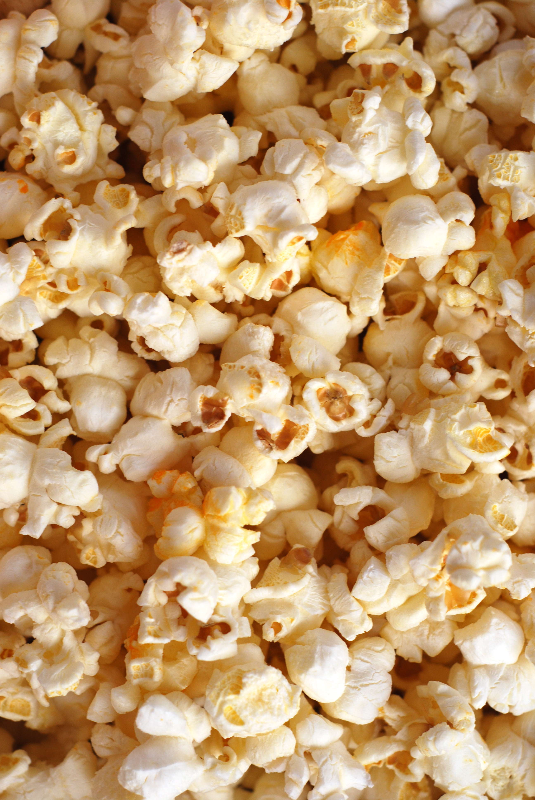

Popcorn
Home

Description
According to Sharmis Passions,Popcorn is a type of corn / maize which hard outer shell and a starchy interior. When the popcorn kernels are heated along with oil the moisture inside turns into steam making the kernel pop or explode making it an edible snack called popcorn.
Ingredients
- Popcorn Kernels - Make sure to buy popcorn kernels and not the regular corn kernels from the store as all the varieties of corn kernels do not pop.
- Oil - Use regular cooking oil or olive oil - however ensure they do not impact the flavor of the popcorn as oils like groundnut oil will radiate its flavor into the food it is added to.If you like the flavor of coconut oil then use it.
- Salt - Salt is added as per taste.
Steps
- First get all your ingredients ready.Make sure to buy popcorn kernels and not normal corn kernels. Take a thick bottomed pan with lid. I used my pressure cooker. Add 2 tablespoon olive oil to it.
- Swirl the pan so that oil is evenly distributed. Heat oil.
- Once oil is heated add a corn kernel to check.
- It will pop up in few seconds.This is the right temperature we need.
- Now add ½ cup corn kernels.
- Give a quick stir.
- Cover it with a lid. The lid should have a vent else close with lid partially for the vapour to escape. Keep flame in low medium.
- It will start popping.
- Now lift the pan from flame and shake it for 2 seconds then place in flame.Repeat this in intervals for all the seeds to pop evenly. Shaking the pan in between makes all the corn kernels pop out perfectly.
- Let the kernels pop completely. Once the popping sound is stopped, you can switch off flame. Immediately open the lid once popping stops else the water droplets may drop into the pan making it soggy,
- Open and give a quick mix. Remove from flame.
- Give a quick stir - Check to see if all the seeds are completely popped. You can add salt mix and serve as such too.
- For butter flavoured popcorn : To a tadka pan add 1 tablespoon butter, let it melt.
- Add melted butter at the sides.
- Add salt to taste.